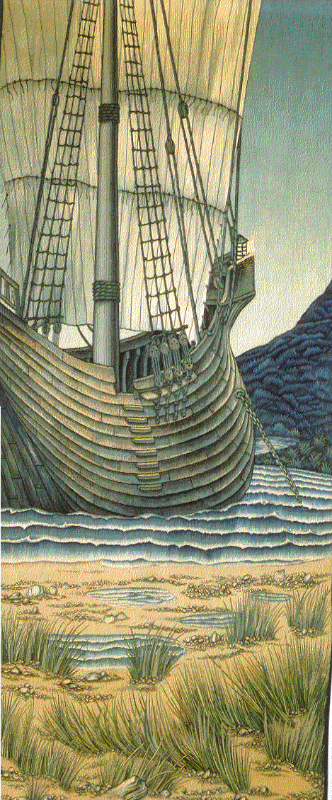

XI-5 LE NAUTONIER
Es-tu le feu qui danse devant la proue?
Le récif qui sera ton but et ta trêve?
Moi, je suis nautonier qui guide et grève,
A fond de cale, ton poids de nuit, de boue.
Compagnon obscur et dont nul ne se joue
Ma voix ne se tait pas au coeur de ton rêve.
Toi qui ne sais pas où ton étoile se lève,
Comment connaîtrais-tu le dieu que tu loues?
Deviens la nuit. Deviens oubli. Fais silence.
Ma voix n'a pas cessé depuis ton enfance.
Elle est ton fil, l'obole pour ton passage,
Le pont lancé sur les rapides de l'âge.
Et lorsque tu auras atteint le point et l'heure,
Jette au courant ton ombre.
Mon CHANT demeure.
Michel Galiana (c) 1990
|

|
XI-5 THE HELMSMAN
Are you the light dancing ahead of the bowsprit?
The reef you're heading for, which will be your respite?
Yet I am the helmsman and I steer and I weight
My holds with your ballast of darkness and of silt.
An obscure companion whom nobody would fool,
My voice never lowers even amidst your dreams.
Since you cannot forecast where your own star appears,
How shall you recognize the god whom you extol?
Become the night. Become oblivion. Be silent.
My voice never has ceased since you were an infant.
It's your Ariadne's clue, the toll for your passage,
The bridge across the swirls and rapids of old age.
When the destination and the hour you attain,
Off you throw your shadow!
My SONG, still, shall remain.
Transl. Christian Souchon 01.01.2005 (c) (r) All rights reserved
|